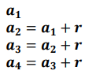
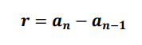
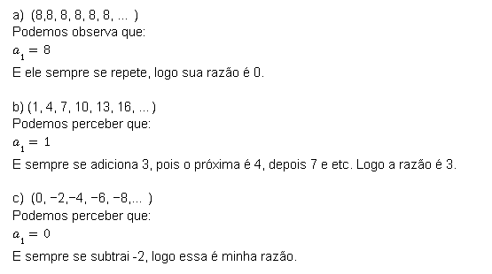
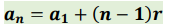
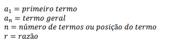
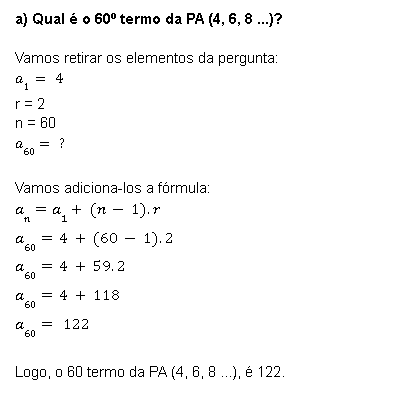
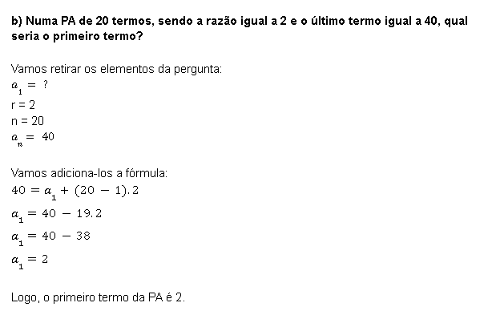

Uma PA, ou seja, Progressão Aritmética, é uma sequência de números onde cada termo, a partir do segundo, é a soma do anterior com uma constante dada por r, que chamamos de razão, ou seja:
Portanto, uma Progressão Aritmética (PA) é uma sequência de números onde a diferença entre cada valor, a partir do segundo, e o valor anterior é sempre constante e representado pela razão r, Ou seja:
1- Vamos analizar algumas PAs e determinar a razão, vejamos:
Bem, vamos então para o termo geral, a fórmula do termo geral serve para encontar algum elemento que se econtra distante dentro de uma sequência infinita, e que muitas vezes não nos é dado, portanto não conseguimos enchergar ele na sequência. Vejamos a Fórmula então:
1- Conceitos importantes para darmos procedência:
2- Vamos então resolver 2 problelmas com a Fórmula do Termo Geral da PA para fixarmos bem, vejamos:
Exemplo 1:
Exemplo 2:
